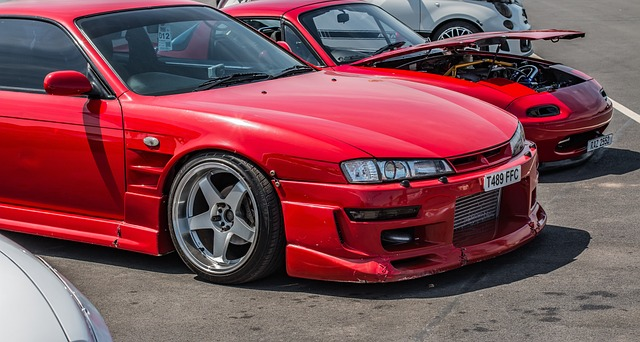

The Priority List (Negotiable)

In my opinion, a JDM car meet is a must or any car meet in Japan
Mount fuji is an iconic location, don't feel like you can go Japan without going there

Very popular destination, also looks hella nice, definitly want ot go there

If we go tokyo, we are definitely coming across this, so should be easy to do